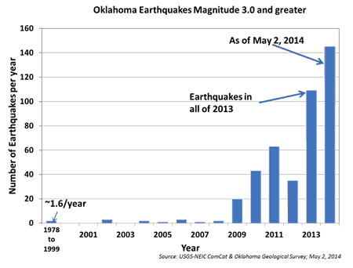

The Numbers Are Staggering
Since 2009, earthquakes in Oklahoma have been increasing at an alarming rate. In 2014 Oklahoma overtook California as the most seismically active state in the contiguous U.S.
Many researchers have linked the unprecedented increase in earthquakes with the wastewater injection practices used by oil and natural gas companies.
Science Mag: Sharp increase in central Oklahoma seismicity since 2008 induced by massive wastewater injection
NPR: Exploring the Link Between Earthquakes and Oil and Gas Disposal Wells